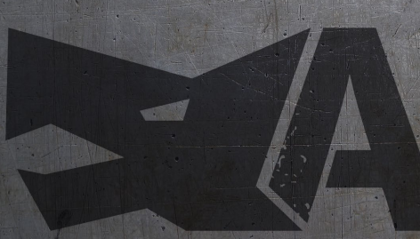

A Lone Wolf
Lassé des relations sociales ? De redoubler d’efforts pour faire semblant de vous intéresser à la vie des autres ? Vous rêvez d’une apocalypse nucléaire pour enfin vous retrouver seul dans votre bunker ? A Lone Wolf est fait pour vous... ou pas. Level Design Document d'un jeu de plateforme et de survie. Téléchargement du PDF.
- Date de création : Octobre 2022
- Créé avec : Gabriel
- Rôle joué : Level Design (premier et dernier niveau), narrative design, création d'une tilemap.